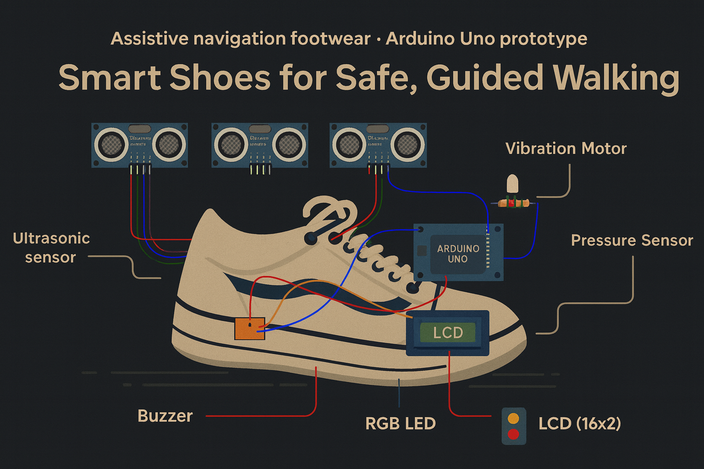
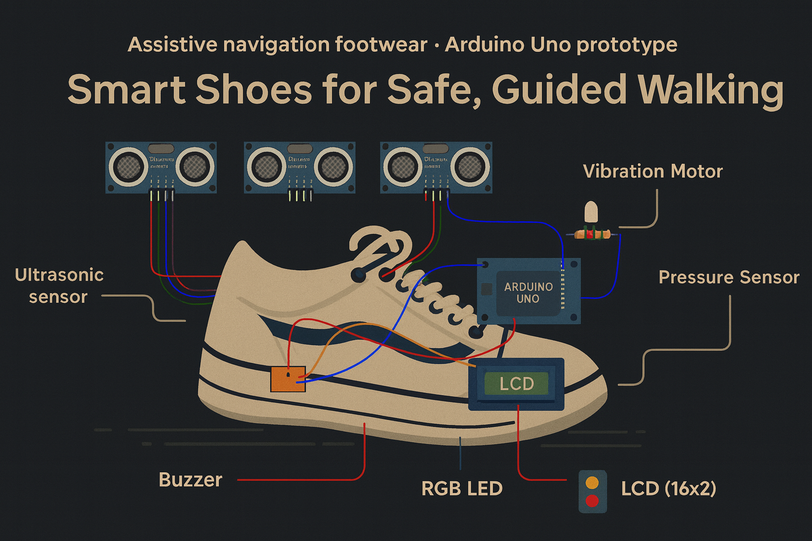

How the System Works

Sensors & Audio Interaction
The system continuously collects data from multiple sensors installed in the shoe. Ultrasonic sensors detect obstacles in front of the user. Each sensor event is mapped to a specific sound pattern so the user can understand the environment without visual feedback.
Slip detection is handled in the dedicated slip-detection module.

Central Control Unit
Arduino Uno acts as the central controller of the system. It processes all sensor inputs in real time and decides which feedback method should be activated. A priority-based logic is implemented so that emergency events have the highest priority, and navigation feedback runs only when no critical events are active. Slip alerts come from the dedicated slip-detection block.
Safety & Feedback Modules
The system uses multiple feedback channels to ensure user safety. Audio signals are the primary feedback method, while vibration and visual indicators provide additional system status information. Each feedback channel has a dedicated role and does not conflict with higher-priority alerts.
 
